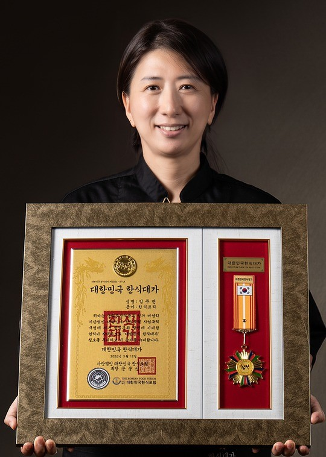
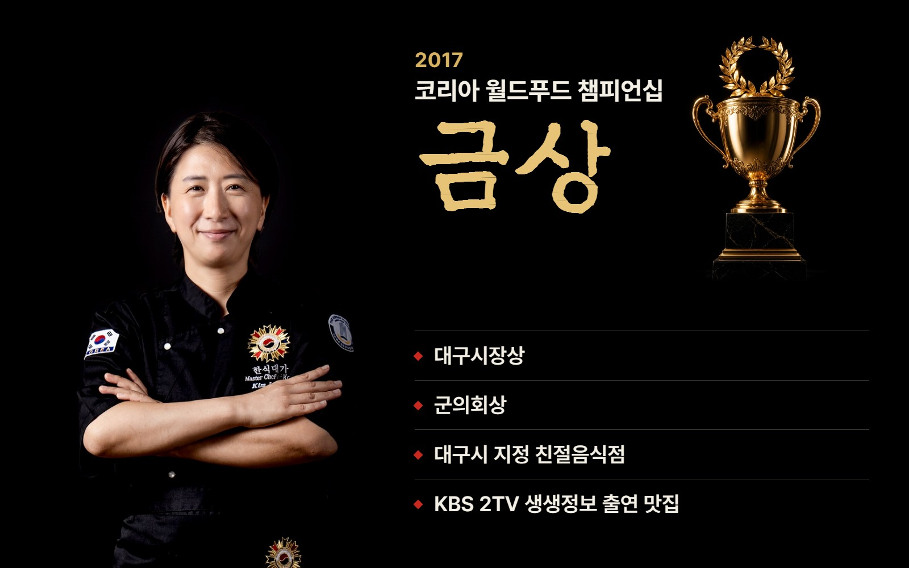
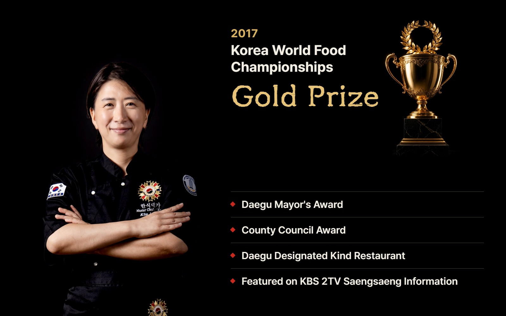
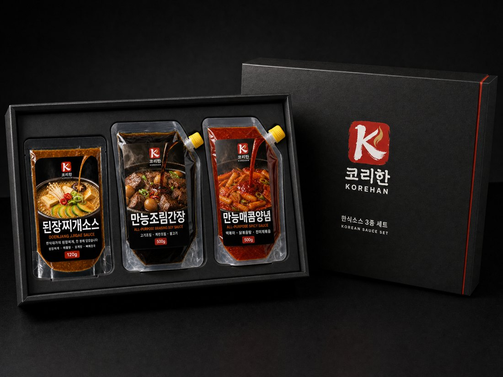
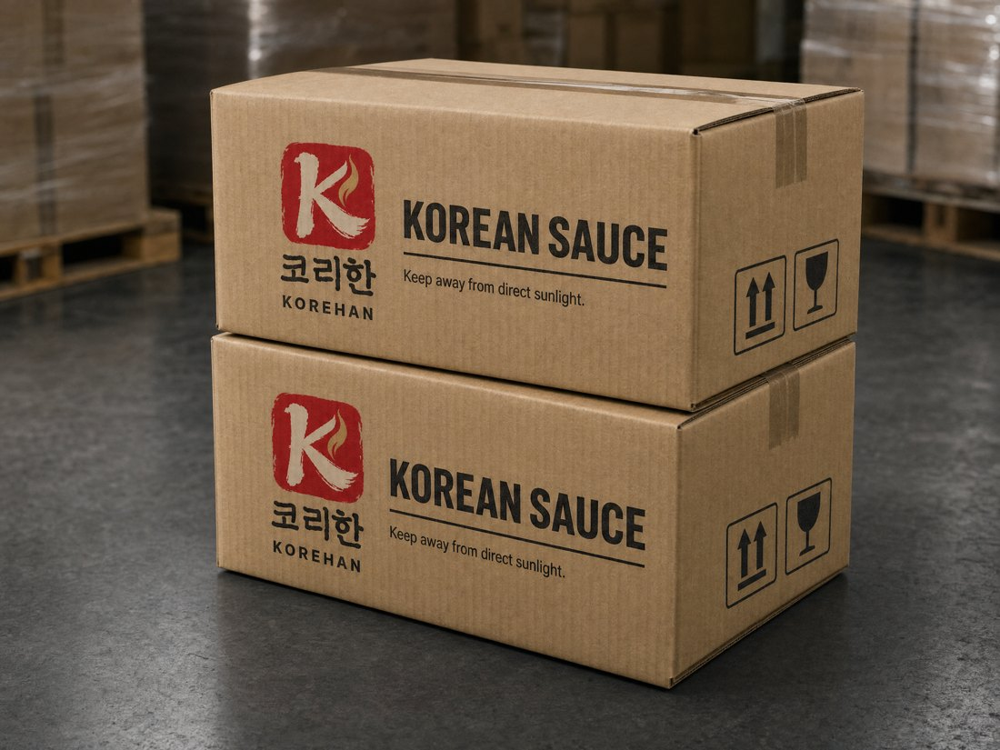

대구 다원천연갈비의 밥상에 오르던 된장찌개와 갈비 양념. 2026 대한민국 한식대가 김주련 대표가 그 손맛을 집에서도, 해외에서도 낼 수 있도록 소스로 옮겼습니다.
It began with the doenjang jjigae and galbi marinade served at Dawon Natural Galbi in Daegu, Korea. Kim Ju-ryeon, named a Korean Cuisine Master in 2026, turned that kitchen's flavor into sauces anyone can cook with, at home or abroad.

대한민국 한식대가 김주련 대표Kim Ju-ryeon, Korean Cuisine Master
걸어온 길
Our history and awards
연혁
History
2017KBS 2TV 생생정보 출연Featured on KBS 2TV Saengsaeng Information
2017코리아 월드푸드 챔피언십 금상Gold Prize, Korea World Food Championships
2022코리아 월드푸드 챔피언십 우승Winner, Korea World Food Championships
2026대한민국 한식대가 인증, 김주련 대표Certified Korean Cuisine Master, Kim Ju-ryeon
2026코리한 한식소스 3종 개발KOREHAN three-sauce line developed


트로피는 연출 이미지입니다.Trophy image is for illustration only.
코리한을 고르는 이유
Why KOREHAN
한식대가의 맛
A master's recipe
식당에서 끓이던 맛을 기준으로 만들었습니다.
Built on the flavor of a working Korean restaurant kitchen.
쉬운 사용
Easy to use
재료만 준비하면 소스가 맛을 잡아 줍니다.
Prepare the ingredients and let the sauce do the seasoning.
넓은 활용도
Versatile
소스 하나로 네 가지 이상의 요리를 만듭니다.
Each sauce works across four or more dishes.
한 팩으로 만드는 요리
One sauce, many dishes
요리 사진은 연출된 이미지입니다.
Food images are for illustration only.
바이어 문의
For buyers
샘플, 납품, 수출 상담을 받습니다. 소비기한, MOQ, 인증은 문의 시 안내합니다.
We welcome inquiries on samples, supply and export. Shelf life, MOQ and certification are shared on request.
제품Product
용량Net weight
포장Packaging
포장
Packaging

소스 3종 세트 박스Three-sauce gift set

수출 카톤Export master carton
포장 디자인 시안입니다. 최종 포장은 생산 전에 확정합니다.
Design concepts. Final packaging is confirmed before production.